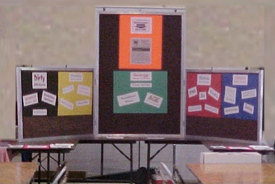

| Action & Reaction - October 2003 |
We took a different approach at the Community Dinner this year. In past years our booth has had a topical theme. The first year our theme was Hard Rock Touché, in which we presented geologic evidence against evolution. The next year our Evolution Behind the Times booth showed examples of evolutionary evidence that has been rejected by scientists for decades that is still in the biology textbook used at the local college. Stone Age Mutant Mammal Turtles showed some of the inexplicable changes that would have to occur for a cold-blooded reptile to become a warm-blooded creature with mammary glands. At the Community Dinner following the filming of Planet of the Apes here in Ridgecrest, we presented Parent of the Apes, which examined how little evidence there is for primate evolution.
At each of those dinners our goal was to educate the general public. But, given that few people spend more than a minute visiting any booth, there is a limit to how much information can be conveyed. So, one goal was to present a few tantalizing facts which might encourage people to study the topic further. Another, more achievable goal, was to let people know we exist, hold monthly meetings, have a web site, and publish a newsletter.
 |
|---|
This year we decided to use the booth to try to get people to attend a series of five one-hour lectures, during which we could present more information. For this reason, we just plastered the walls of our booth with signs proclaiming the topics we would discuss. We had been advertising the Evolution Exposé series in the newspaper and Swap Sheet the previous week, and used the booth as a final reminder that the Exposé started the next evening. We gave out flyers listing the place, dates, times, and topics for each lecture.
Of course we still wanted people to know we exist, hold monthly meetings, have a web site, and publish a newsletter. We were pleased to discover that many people already knew about our work and were supportive.
The number of hostile people has been steadily decreasing over the years, and this year there were only three people who exhibited any signs of hostility. One was the minister of one of the larger Christian churches in town. He was working in a secular booth near ours, and had to pass by our booth several times. I called out his name each time he walked past, but he would not even look at me.
The second was a well-known, well-respected scientist (with a PhD.) employed by the local Navy base. Last year, when we had talked at length, I kept asking him specific questions such as, "What do you think is the most compelling evidence in favor of evolution?" He would just fuss and fume and say something like, "Everybody knows evolution is true!" He could not, on the spur of the moment, give any explanation whatsoever for his belief in evolution. I had hoped that, after having a year to think about it, he would come back to the booth with some specific topic that we could discuss from a scientific perspective. This year he just walked by and shook his head without stopping.
The third person I recognized as one who had visited the booth the two previous years. I do not know his name or occupation. His appearance and accent would lead one to believe that he belongs to an ethnic group that has historically been anti-Christian. In previous years he has called me many derogatory names, and this year was no exception. Most of his tirades began, "You Christians ..." or, "Your religion ..." . I kept telling him that Science Against Evolution does not discuss religious topics. I asked him to point to anything in our booth, or cite anything we had ever printed in our newsletter, that endorsed Christianity (or any other religion). I did everything I could to get him to discuss the theory of evolution from a scientific viewpoint, but he just ranted and raved against Christianity. I asked him to come to the Evolution Exposé and hear our scientific discussion of the theory of evolution. And he did!
The first evening of the Evolution Exposé began promptly on time (as it did on all the following nights), and the individual mentioned in the previous paragraph arrived several minutes after it started. He immediately started muttering to himself, and the people around him asked him to be quiet. Instead, he kept getting louder, and finally stood up and started shouting at me. People in the audience started telling him to sit down and be quiet.
The heckler shouted that I had invited him to come, and he would leave when I told him to, but not before. It is true that I had asked him to come and listen. I did not invite him to come to disrupt the meeting.
I tried to calm him down, and asked him to simply listen to what I said, but he continued to cause a disruption. He kept shouting that he would not leave until I asked him to leave. I think he wanted to be able to say that I had thrown him out, and I really didn't want him to be able to say that, so I let him continue a little while. Then he used some mild profanity, and the large, burly, head deacon of the church that had graciously allowed us to use their sanctuary, started to stir restlessly in his seat. So, I did ask the heckler to leave. But he continued to shout, and I asked him to leave a second time. Fortunately he did leave then. The head deacon, and another big man I did not know, told me after the presentation that they were just about to expedite his departure if he had not left then. The presentation continued without further interruptions.
I don't know if the heckler had been listening to what I was saying or not. I was trying to make the point that belief in the theory of evolution is based on emotion rather than logic. His emotional outburst illustrated my point perfectly. He made no rational defense of evolution, could not dispute any of the facts I had presented, and could do nothing more than call me names.
His rude behavior united the audience against him, and got them all firmly on my side. Some people even suggested that in future seminars I should plant someone in the audience to act like he did. We won't do that for obvious ethical reasons, and a not-so-obvious practical one. Practically speaking, I doubt that we could find an actor who could play that part with such passion, even in a town like Ridgecrest where some of the residents have worked in Start Trek V, Planet of the Apes, and Holes (to name just a few of the movies shot here that have employed local actors).
We are sensitive to the fact that there is still, in some circles, prejudice against people who do not believe in evolution. Some people have told us horror stories of encounters they have had with a couple of the local college teachers. Some people fear getting on any mailing lists. For those reasons, and because we were not charging for the seminar, we did not make people register when they attended the Evolution Exposé. Therefore, we don't have accurate attendance records. We don't know how many people came once and never came back. Some people came late, a few left early. Generally speaking, there were more people in the auditorium when the lecture ended than when it started. The first night there were about 40 people. Attendance grew steadily during the week, up to as many as 70 on the last night. We took that as a good sign.
In past years when we have done something public, it has sparked a series of letters to the editor in the local newspaper. This year only one letter was published.
We don't know why there was only one letter. Maybe there were other letters that weren't worth printing. Maybe there were other letters which contained too much unprintable language. Maybe the editor felt that letters concerning the pending recall of the governor of California were of more importance than letters about a little local anti-evolution group holding a meeting.
It could be, however, that the editor didn't print any other letters against us because there weren't any. Evolutionists are not willing to engage in a discussion of the issues any more. Two years ago I agreed to participate in a debate that student was trying to organize at the local college. The debate never happened because nobody wanted to defend evolution. Certainly, nobody who visited our booth at the Community Dinner would have been able to present any kind of rational defense of the theory of evolution.
Ironically, the one letter to the editor that was printed simply complained that the newspaper had printed our whole press release about the upcoming Evolution Exposé, instead of reducing it to a little obscure announcement in the calendar section. She didn't think we should have been given that much attention because "Creationism is censorship." Since her goal was an attempt to block publication of a seminar that presents information that is systematically excluded from science textbooks, we wonder what she thinks censorship is.
Maybe there were some people who missed our press release but read her letter to the editor, and came to the Exposé because of it. We certainly hope so.
Taken all together, the Letter to the Editor, Community Dinner, and Evolution Exposé, were very successful in raising awareness that science really is against evolution.
| Quick links to | |||
|---|---|---|---|
| Science Against Evolution Home page |
Back issues of Disclosure (our newsletter) |
Web Site of the Month |
Topical Index |
THANKS! We want to take this opportunity to thank the Ridgecrest Seventh-day Adventist Church for allowing us to us their sanctuary and excellent audio-visual system free of charge. Because of their generosity, we were able to present the Evolution Exposé without charging an admission fee, or collecting an offering. Furthermore, the Ridgecrest Public Library conference room, where we usually meet, would not have been able to hold even half of the people who attended.